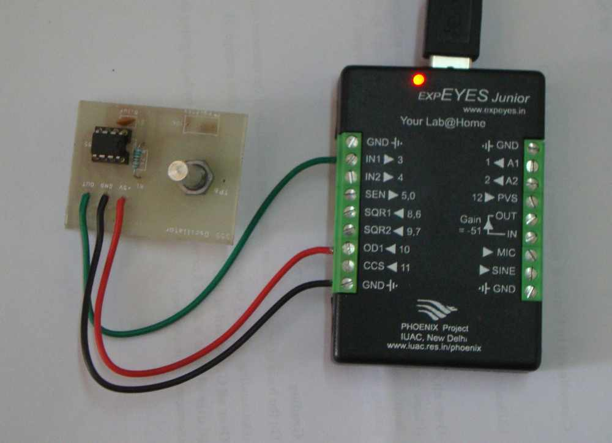
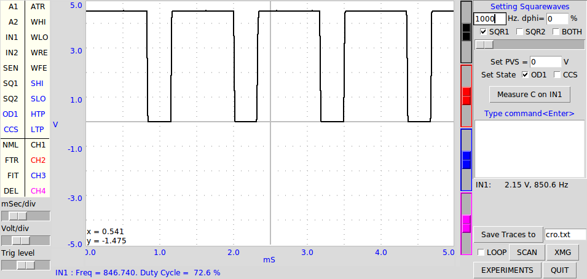

An astable multivibrator is wired using IC555 and the frequency and duty cycle of the output are measured. Circuit and the output waveform are shown below. The 5 volt supply for IC555 is taken from OD1, by setting it HIGH. The frequency is given by f = 1/ (ln 2 × C × (R1 + 2R2 )). The HIGH time is given by ln 2×C ×(R1 + R2 ) and LOW time by ln 2 × C × R2 .
 